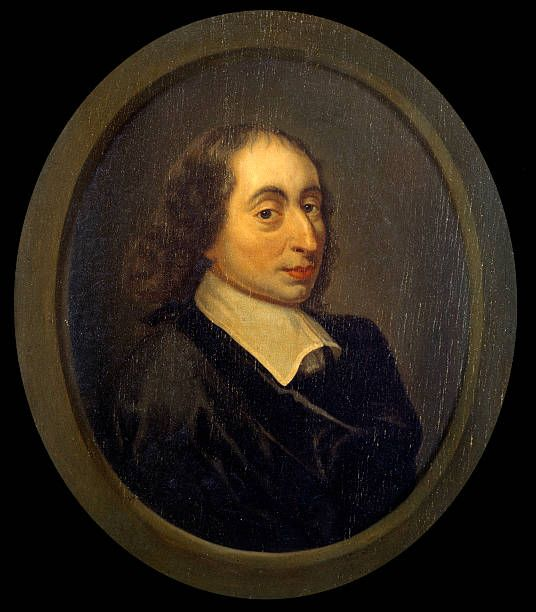

Who Was Blaise Pascal?
Blaise Pascal (1623–1662) was a French philosopher, mathematician, physicist, inventor, writer, and religious thinker. Although he died at the age of only thirty-nine, Pascal made important contributions to mathematics and science while also producing one of the most powerful philosophical investigations of the human condition.
Blaise Pascal's philosophy focuses on the strange position of human beings between greatness and misery. Human beings are capable of reason, imagination, scientific discovery, and moral reflection, yet they are also vulnerable, mortal, uncertain, and often unable to achieve lasting happiness through worldly pursuits alone.
Pascal is especially famous for his reflections on the limits of reason and for Pascal's Wager, an argument concerning belief in God. His philosophy does not reject reason, but it argues that reason cannot answer every question that matters most deeply to human existence.
His unfinished collection of philosophical and religious reflections, Pensées, became one of the most influential works in the history of philosophy of religion. Pascal's ideas later influenced existentialism, Christian philosophy, literature, psychology, and modern discussions about faith, uncertainty, and the meaning of human life.
Blaise Pascal: Quick Facts
- Full name — Blaise Pascal
- Born — June 19, 1623
- Died — August 19, 1662
- Nationality — French
- Philosophical tradition — Early modern philosophy and Christian philosophy
- Major fields — Philosophy, mathematics, physics, theology, and scientific inquiry
- Major subjects — Faith, reason, God, human nature, skepticism, happiness, and mortality
- Famous idea — Pascal's Wager
- Most famous philosophical work — Pensées
- Important religious work — Provincial Letters
- Important scientific contribution — Studies of pressure and the vacuum
- Mathematical contribution — Probability theory and Pascal's Triangle
Blaise Pascal's Early Life and Education

Blaise Pascal was born in Clermont-Ferrand, France, in 1623. His father, Étienne Pascal, was educated in mathematics and science and played an important role in his son's intellectual development. Pascal displayed extraordinary ability from an early age and became involved with mathematical questions while still very young.
Pascal's education did not follow a simple conventional path. His intellectual environment exposed him to mathematics, geometry, scientific investigation, and major philosophical debates of seventeenth-century Europe. This broad education helped create the unusual combination of scientific precision and philosophical depth visible throughout his work.
During his lifetime, Europe was experiencing major changes in science and philosophy. Thinkers such as René Descartes, Galileo, and others were challenging older assumptions about nature and knowledge. Pascal participated directly in this intellectual transformation through his own experiments and mathematical discoveries.
Yet Pascal eventually became increasingly concerned with questions that scientific knowledge alone could not settle. What is the meaning of human life? Why do people remain dissatisfied even when they possess comfort and success? What can reason establish about God? These questions became central to Pascal's philosophy.
Why Is Blaise Pascal Important?
Blaise Pascal is important because he stands at the intersection of philosophy, science, mathematics, and religion. Few thinkers demonstrate so clearly that scientific intelligence and religious reflection can exist within the same intellectual life, even when they raise different kinds of questions.
Pascal also developed one of the most penetrating accounts of the human condition in early modern philosophy. He rejected both excessive confidence in human reason and complete contempt for humanity. Human beings are neither purely rational nor merely insignificant; they occupy a complex position between greatness and weakness.
His reflections on uncertainty and belief remain highly influential. Pascal's Wager introduced a distinctive way of thinking about religious belief by using ideas related to risk, decision, and possible consequences rather than attempting to prove God's existence through reason alone.
Pascal's influence extends into existentialism and modern philosophy. His attention to anxiety, mortality, boredom, self-deception, and the search for meaning anticipated concerns that later became central to thinkers such as Søren Kierkegaard and other existential philosophers.
The Historical Context of Blaise Pascal's Philosophy
Blaise Pascal lived during the seventeenth century, an important period in the development of modern science and philosophy. Traditional Aristotelian explanations of nature were increasingly challenged by new mathematical methods, experiments, observations, and mechanical accounts of the physical universe.
At the same time, philosophers were debating the foundations of knowledge. Rationalist thinkers emphasized reason and intellectual certainty, while other traditions placed greater importance on experience, skepticism, and the limits of human understanding. Pascal participated in these debates without fitting neatly into one philosophical system.
Religious conflict was also a major part of European intellectual life. Questions about grace, salvation, church authority, human freedom, and religious practice generated intense controversy. Pascal became closely connected with Jansenist circles and defended positions that brought him into conflict with other religious authorities.
This historical setting helps explain the distinctive character of Pascal's thought. He witnessed extraordinary advances in scientific knowledge while remaining convinced that scientific progress did not remove the deepest questions concerning death, suffering, God, and the meaning of human existence.
Blaise Pascal's Main Philosophical Ideas
1. Human Beings Are Both Great and Miserable
Pascal argued that human beings possess remarkable intellectual and moral capacities, yet they are also fragile and finite. Human greatness lies partly in the ability to recognize one's own weakness, mortality, and limitations.
2. Reason Has Limits
Reason is powerful and essential, but Pascal believed that it cannot provide complete certainty about every important question. Some dimensions of human life involve experience, intuition, commitment, and faith in ways that cannot be reduced entirely to logical proof.
3. Human Beings Escape Themselves Through Diversion
Pascal argued that people constantly seek entertainment, activity, ambition, and distraction because silence and solitude can force them to confront mortality, uncertainty, and the deeper dissatisfaction of human existence.
4. Faith Cannot Be Reduced to Abstract Proof
Pascal did not believe that religious faith could simply be produced through a philosophical demonstration. Faith involves the whole human being, including personal experience, commitment, emotion, and a form of understanding that exceeds purely abstract reasoning.
5. Human Life Requires Decisions Under Uncertainty
Pascal's Wager reflects his broader recognition that people often must act without complete certainty. Refusing to decide is itself a form of decision, because human beings must live and choose even when absolute proof is unavailable.
Blaise Pascal's View of Human Nature
Human nature is one of the central subjects of Blaise Pascal's philosophy. Pascal was fascinated by the contradictions within human life. People are capable of extraordinary intellectual achievements, but they are also easily distracted, emotionally unstable, vulnerable to suffering, and unable to escape death.
Pascal famously described human beings as possessing both greatness and misery. Their misery comes from weakness, ignorance, mortality, and dissatisfaction. Their greatness comes from consciousness and the ability to understand these conditions rather than merely existing without awareness.
This dual view prevented Pascal from accepting either extreme optimism or complete pessimism about humanity. He rejected the belief that human beings are naturally self-sufficient, but he also rejected the idea that they are completely worthless or incapable of truth and moral reflection.
Pascal's analysis of human nature remains powerful because it begins with ordinary experience. People seek success, pleasure, recognition, entertainment, and activity, yet these achievements often fail to provide permanent contentment. Pascal asks why human beings remain restless even when many of their desires are fulfilled.
Human Greatness and Human Misery in Pascal's Philosophy
The contrast between human greatness and human misery provides one of the clearest summaries of Pascal's philosophical anthropology. Human beings are physically weak when compared with the immense forces of nature, yet they possess the ability to think about the universe and understand their own fragile position within it.
Pascal believed that consciousness itself reveals something important about human greatness. A human being may be physically insignificant, but unlike an object without awareness, a person can recognize suffering, mortality, limitation, and the vastness of the world.
At the same time, this awareness creates anxiety. Human beings know that they will die and cannot completely control their future. Pascal therefore understood consciousness as both a source of dignity and a source of existential difficulty.
His philosophy attempts to explain why people often move between pride and despair. When they focus only on their intellectual powers, they may become arrogant. When they focus only on weakness and mortality, they may fall into despair. Pascal's thought attempts to hold both realities together.
Blaise Pascal on Reason and Its Limits
Blaise Pascal was not an enemy of reason. His own achievements in mathematics and science demonstrate his respect for rigorous thought. However, Pascal believed that reason has limits and that human beings become intellectually mistaken when they assume that rational argument can solve every problem.
Mathematics can provide remarkable certainty within its own domain, and scientific investigation can reveal important truths about the natural world. But questions about love, meaning, commitment, mortality, and religious faith involve dimensions of experience that cannot always be resolved through calculation alone.
Pascal was also influenced by skepticism. Human reason can make errors, and people frequently disagree about important philosophical questions. The existence of intellectual ability does not guarantee that human beings can achieve complete certainty about every metaphysical matter.
Pascal therefore developed a philosophy that combines confidence and humility. Reason should be used seriously and carefully, but human beings should also recognize the boundaries of what reason can establish. Intellectual humility becomes an important part of wisdom.
"The Heart Has Its Reasons": Pascal on the Heart and Reason
One of the most famous ideas associated with Blaise Pascal is his statement that "the heart has its reasons". This idea is often misunderstood as a rejection of logic or an argument that emotions should replace rational thought.
In Pascal's philosophy, the "heart" refers more broadly to a form of immediate human understanding or awareness. Pascal believed that some fundamental principles are not established through a chain of formal deductions but are recognized through forms of direct understanding and lived experience.
This distinction allowed Pascal to criticize the belief that all human knowledge has exactly the same structure. Mathematical proof, practical judgment, personal relationships, and religious commitment involve different ways of knowing and cannot always be reduced to one method.
Pascal's reflections on the heart and reason remain important in philosophy because they raise a continuing question: can a completely adequate account of human understanding be based only on formal rationality, or must philosophy also examine experience, intuition, emotion, and personal existence?
Blaise Pascal on Faith and Reason
The relationship between faith and reason is central to Pascal's philosophy. Pascal believed that reason could play an important role in religious reflection, but he rejected the idea that faith could be completely established through abstract philosophical proof.
Human beings approach religion not simply as detached logical machines. They bring fear, hope, desire, suffering, personal history, and awareness of mortality to religious questions. Pascal's philosophy therefore treats faith as an existential problem as well as an intellectual one.
Pascal also believed that religious belief must confront human uncertainty honestly. Complete certainty may not be available, but uncertainty does not eliminate the necessity of choosing how to live. This insight becomes especially important in his famous argument known as Pascal's Wager.
His approach differs from both blind irrationalism and extreme rationalism. Pascal does not say that reason is useless, but neither does he believe that human existence can be reduced to a mathematical theorem. Faith and reason occupy a complicated relationship rather than simply opposing one another.
What Is Pascal's Wager?
Pascal's Wager is Blaise Pascal's famous argument concerning belief in God. It does not attempt to prove that God exists through a traditional metaphysical demonstration. Instead, it asks how a person should make a decision when certainty about God's existence is unavailable.
Pascal argues that human beings are already involved in the question. A person cannot simply avoid the issue forever, because living as if God exists and living as if God does not exist represent different practical orientations. In this sense, refusing to choose is itself connected with a choice.
The argument considers the possible consequences of belief and disbelief. If God exists, Pascal suggests that the possible significance of religious belief may be infinitely greater than the limited worldly costs associated with religious commitment.
Pascal's Wager therefore uses a form of practical reasoning. The central question is not simply, "Can God's existence be proven with certainty?" It is also, "How should a rational person act when facing uncertainty and potentially enormous consequences?"
The Wager remains one of the most discussed arguments in philosophy of religion. Supporters see it as an innovative approach to decision making under uncertainty, while critics question whether religious belief can genuinely be produced through calculation.
Pascal's Wager Explained Simply
Pascal's argument can be understood through a basic decision problem. A person faces uncertainty about whether God exists, but the person must still live in some way. Pascal suggests considering the possible outcomes connected with belief and disbelief.
- If God exists and a person believes — Pascal argues that the possible gain is enormously significant.
- If God does not exist and a person believes — The possible loss is limited to the worldly costs of a religious way of life.
- If God exists and a person does not believe — The possible loss, according to Pascal's religious framework, is extremely serious.
- If God does not exist and a person does not believe — The possible gain is limited and finite.
Pascal concludes that the structure of the decision gives a practical reason to take religious belief seriously. The argument does not remove uncertainty; instead, it attempts to explain why uncertainty itself may create reasons for choosing one possible way of life over another.
Criticisms of Pascal's Wager
Pascal's Wager has received extensive criticism. One major objection asks whether a person can genuinely choose to believe simply because belief appears advantageous. Religious faith may involve conviction, experience, and personal transformation rather than a decision that can be produced immediately through calculation.
Another criticism is known broadly as the problem of many possible religions. The Wager discusses belief in a particular religious framework, but critics ask how a person should choose among different religious traditions and different conceptions of God.
Some philosophers also argue that Pascal's calculation oversimplifies the possible costs and benefits of religious life. Belief can influence personal identity, social relationships, moral decisions, and ways of understanding the world, making the decision more complicated than a simple mathematical wager.
Despite these criticisms, Pascal's Wager remains philosophically important. It introduced probability and decision-like reasoning into discussions of religion and demonstrated that practical choices may require action even when theoretical certainty is impossible.
Blaise Pascal's Pensées
Pensées, meaning "Thoughts," is Blaise Pascal's most famous philosophical work. It was published after his death and consists of fragments, notes, reflections, arguments, and observations that Pascal had prepared for a larger defense of Christianity.
Because the work remained unfinished, Pensées does not present a perfectly systematic philosophical structure. Yet this fragmentary character also gives the work unusual power. Pascal moves directly between questions about God, human nature, skepticism, happiness, boredom, death, reason, and religious faith.
Many of Pascal's most famous philosophical ideas appear in Pensées. The work explores the contradictions of human existence and repeatedly asks why people seek distraction instead of confronting their own condition.
Pensées remains important because it combines philosophical analysis with literary force. Pascal does not merely construct abstract arguments; he examines how people actually behave, how they avoid uncomfortable truths, and why the search for permanent happiness remains so difficult.
What Did Pascal Mean by Diversion?
Diversion, often translated from the French word divertissement, is one of Pascal's most important ideas. Pascal observed that human beings constantly seek activities, entertainment, competition, ambition, and social involvement that keep them from being alone with their own thoughts.
According to Pascal, people often believe they are pursuing particular activities because the activities themselves will make them happy. However, he suggests that much of their motivation comes from a desire to avoid boredom, silence, anxiety, and awareness of mortality.
Pascal's idea of diversion is not limited to trivial entertainment. Wealth, political ambition, social status, gambling, work, and competition can also become forms of diversion when they are pursued mainly to prevent a person from confronting deeper existential questions.
This idea remains strikingly relevant today. Modern technologies and constant entertainment provide unprecedented opportunities for distraction. Pascal's philosophy encourages readers to ask whether constant activity produces genuine happiness or merely prevents temporary confrontation with dissatisfaction and uncertainty.
Blaise Pascal on Happiness
Pascal believed that human beings naturally seek happiness, yet they frequently search for it in things that cannot provide permanent satisfaction. Pleasure, wealth, achievement, entertainment, and social recognition may provide temporary enjoyment, but they remain vulnerable to change and loss.
The problem, according to Pascal, is not that worldly activities are always evil or meaningless. Rather, human beings make a mistake when they expect finite and temporary things to satisfy a deeper and more permanent desire.
Pascal connects this dissatisfaction with the religious dimension of his philosophy. The restlessness of human beings becomes evidence, for him, that the human condition cannot be fully understood through material success alone.
Even readers who do not accept Pascal's religious conclusions can find philosophical value in his analysis. His questions about consumerism, ambition, distraction, and the pursuit of happiness continue to challenge assumptions about what a successful human life should look like.
Blaise Pascal and Skepticism
Skepticism played an important role in Pascal's thought. Pascal recognized that human beings often possess less certainty than they imagine. Philosophers disagree, perceptions can deceive, and reason itself can encounter questions for which no universally accepted answer is available.
Pascal did not respond to skepticism by abandoning all attempts at knowledge. Instead, he attempted to distinguish between different domains of understanding. Mathematics and science can establish important truths, while other questions remain more deeply connected with uncertainty and personal existence.
His engagement with skepticism also challenged intellectual pride. Human beings may be tempted to believe that their reasoning powers make them completely independent and self-sufficient, but Pascal repeatedly emphasizes the fragility and limitations of human knowledge.
Pascal's skepticism therefore serves a constructive purpose. By recognizing uncertainty, individuals may become more intellectually humble and more honest about the conditions under which they make decisions concerning truth, morality, and religious belief.
Blaise Pascal's Philosophy of God
God occupies a central place in Pascal's philosophy, but Pascal's approach differs from attempts to establish God's existence through a purely abstract metaphysical system. He was concerned with the difference between an intellectual concept of God and a living religious relationship.
Pascal believed that philosophical arguments could play a role in religious reflection, but he doubted that they could by themselves create genuine faith. A person may accept an abstract proposition about God without experiencing the transformation or commitment associated with religious life.
His philosophy therefore places strong emphasis on the human search for meaning. Questions about God emerge alongside questions about death, suffering, happiness, uncertainty, and the inability of finite achievements to provide complete fulfillment.
Pascal's approach remains influential in philosophy of religion because it treats belief not merely as an intellectual conclusion but as a question involving the entire life of the person who believes or does not believe.
Blaise Pascal, Christianity, and Jansenism
Blaise Pascal became closely associated with the religious movement known as Jansenism, particularly with the community connected to Port-Royal. Jansenist thought emphasized themes including grace, human weakness, sin, and the dependence of human beings upon divine assistance.
Pascal's religious commitments influenced his philosophical view of human nature. His emphasis on human weakness and dissatisfaction was connected with a theological understanding of humanity's need for grace rather than complete self-sufficiency.
His involvement in religious controversy also produced the famous Provincial Letters. These writings combined theological argument, satire, and literary skill while defending positions associated with the Jansenist movement.
Understanding Pascal's Jansenist background is important, but his philosophical significance extends beyond that historical movement. His reflections on uncertainty, distraction, mortality, and the limits of reason continue to interest readers from many religious and nonreligious perspectives.
Blaise Pascal's Contributions to Science
Blaise Pascal was not only a philosopher. He made significant contributions to seventeenth-century science, particularly through investigations concerning fluids, pressure, and the possibility of a vacuum.
Pascal conducted and encouraged experiments that examined atmospheric pressure. His scientific work contributed to a broader transformation in European understanding of the physical world and challenged older assumptions about the impossibility of empty space.
These scientific achievements are important for understanding Pascal's intellectual character. He possessed direct experience with rigorous experimentation and mathematical reasoning, making his reflections on the limits of reason especially significant.
Pascal did not reject science because it could not answer religious questions. Instead, his philosophy suggests that different forms of inquiry may have different proper domains. Scientific knowledge is enormously valuable without necessarily providing a complete answer to every question about human existence.
Blaise Pascal and Mathematics
Blaise Pascal made important contributions to mathematics at a young age. His work in geometry and combinatorics helped establish his reputation as one of the remarkable mathematical minds of the seventeenth century.
Pascal is widely associated with Pascal's Triangle, a numerical arrangement with important applications in algebra, combinatorics, and probability. Although related mathematical ideas existed before him, Pascal made important contributions to the study and systematic use of these patterns.
His correspondence and work concerning games of chance also contributed to the early development of probability theory. Probability later became one of the most important areas of modern mathematics and provided a significant background for understanding Pascal's reasoning about uncertainty.
The relationship between Pascal's mathematics and his philosophy is especially interesting. Pascal understood both the extraordinary power of mathematical certainty and the existence of human questions that could not simply be transformed into mathematical problems.
Blaise Pascal and the Scientific Revolution
Pascal was an important participant in the intellectual world of the Scientific Revolution. This period transformed the study of nature through observation, experimentation, mathematics, and the criticism of inherited authorities.
His scientific investigations demonstrated a willingness to test claims against evidence rather than accepting traditional explanations without examination. This experimental attitude connected Pascal with broader changes occurring across European science.
Pascal's work also illustrates an important philosophical lesson about scientific progress. New discoveries can transform humanity's understanding of nature, but increased knowledge about the physical universe does not automatically resolve questions about purpose, morality, or ultimate meaning.
For this reason, Pascal occupies a distinctive position in intellectual history. He represents both the confidence of the new science and the philosophical recognition that human life cannot be understood only by describing physical mechanisms.
Blaise Pascal and Existentialism
Blaise Pascal lived long before existentialism became a recognized philosophical movement, but many scholars and readers see him as an important precursor to existential thought. His philosophy concentrates on individual existence rather than treating human beings only as abstract examples within a universal system.
Pascal examines anxiety, mortality, boredom, decision, uncertainty, and the search for meaning. These themes later became central to existential philosophers, particularly those concerned with the individual's confrontation with freedom and the conditions of human existence.
Pascal's influence is especially visible in comparison with Søren Kierkegaard. Both thinkers criticized excessive confidence in abstract systems and emphasized the personal difficulty of religious commitment and individual existence.
Pascal should not simply be called an existentialist, because the movement developed much later. Nevertheless, his attention to the concrete problems of living, choosing, suffering, and dying makes him an important figure in the intellectual history that preceded modern existentialism.
Blaise Pascal and René Descartes
Blaise Pascal and René Descartes were both major French thinkers of the seventeenth century, but they developed very different philosophical styles. Descartes sought secure foundations for knowledge through methodical doubt and rational argument.
Pascal respected mathematical and scientific reasoning but was more deeply concerned with the limitations of systematic rationalism. Whereas Cartesian philosophy often emphasizes the power of clear and distinct reasoning, Pascal repeatedly draws attention to the complexity and instability of human existence.
Their differences can also be seen in their approaches to religion. Descartes developed philosophical arguments concerning God's existence, while Pascal was more skeptical about the ability of abstract proofs alone to produce the kind of faith that religious life requires.
Together, Pascal and Descartes represent two important tendencies in early modern thought: confidence in rational method and awareness of the limits of human reason. Their contrast remains useful for understanding major debates in epistemology and philosophy of religion.
Blaise Pascal on Death and Mortality
Mortality is an important background to Pascal's philosophy. Human beings know that life is temporary, yet they frequently organize their lives around activities that prevent them from seriously confronting this fact.
Pascal believed that awareness of death reveals the limits of worldly security. Wealth, social status, physical strength, and achievement cannot permanently protect an individual from the basic condition of mortality.
This recognition contributes to his theory of diversion. Constant activity may function partly as a defense against the anxiety produced by awareness of time, death, and uncertainty about the future.
Pascal's reflections on mortality remain philosophically important because they ask whether a good life requires the courage to confront realities that people would often prefer to ignore. His philosophy treats death not only as a biological event but also as a fact that shapes human meaning and decision.
Major Works of Blaise Pascal
- Pensées — Pascal's famous collection of philosophical and religious reflections on human nature, faith, reason, God, skepticism, and the human condition.
- Provincial Letters — A series of influential writings combining religious controversy, philosophical argument, satire, and literary style.
- Treatise on the Arithmetical Triangle — An important mathematical work associated with the development and applications of what is now called Pascal's Triangle.
- Scientific writings on pressure and the vacuum — Pascal's experimental work contributed to the scientific study of fluids, atmospheric pressure, and the existence of a vacuum.
- De l'esprit géométrique — A work reflecting Pascal's interest in mathematical reasoning, method, and the nature of clear demonstration.
Blaise Pascal's Most Important Concepts
Pascal's Wager
A practical argument concerning belief in God that considers how individuals should act under uncertainty when different choices may have dramatically different consequences.
Greatness and Misery
Human beings are both remarkable and fragile. Their greatness lies partly in consciousness and self-awareness, while their misery comes from weakness, uncertainty, mortality, and dissatisfaction.
Diversion
Human beings often seek entertainment, ambition, activity, and social involvement to avoid confronting boredom, mortality, uncertainty, and the deeper problems of existence.
The Heart and Reason
Pascal argued that human understanding cannot be reduced completely to formal logical deduction. Different forms of knowledge and experience play different roles in human life.
The Limits of Reason
Reason is powerful and essential, but human beings should remain humble about what rational argument alone can establish concerning every important philosophical and religious question.
The Human Condition
Pascal's philosophy examines the concrete condition of being human: living between greatness and weakness while confronting mortality, uncertainty, desire, suffering, and the search for meaning.
Blaise Pascal's Influence and Legacy
Blaise Pascal's influence extends across philosophy, theology, mathematics, science, literature, and psychology. His ability to move between technical scientific inquiry and profound reflection on human existence makes him one of the most distinctive figures of early modern intellectual history.
In philosophy of religion, Pascal remains central to debates about faith, rationality, evidence, and religious decision making. Pascal's Wager continues to be discussed in relation to probability theory, decision theory, and arguments concerning belief under uncertainty.
His reflections on the human condition influenced later existential and religious thinkers. Philosophers interested in anxiety, mortality, boredom, individuality, and the difficulty of finding meaning have repeatedly returned to Pascal's observations.
Pascal also remains culturally influential because his ideas describe recognizable aspects of ordinary life. His analysis of distraction and the restless search for happiness continues to resonate in societies filled with entertainment, competition, technology, and constant opportunities to avoid silence.
Criticisms of Blaise Pascal's Philosophy
Blaise Pascal's philosophy has received criticism from both religious and nonreligious thinkers. Some critics argue that his description of human misery is excessively pessimistic and gives insufficient value to ordinary forms of happiness, creativity, friendship, and worldly achievement.
Pascal's Wager has generated particularly strong objections. Critics question whether belief can be chosen for strategic reasons and whether a rational calculation can determine which religious tradition, if any, a person should follow.
Other philosophers disagree with Pascal's strong emphasis on the limits of reason. Rationalist thinkers may argue that Pascal underestimates the ability of philosophical argument and scientific inquiry to expand human understanding.
Nevertheless, these criticisms demonstrate the continuing importance of Pascal's thought. His philosophy forces readers to confront questions that remain difficult even after centuries of scientific and intellectual progress: What makes a human life meaningful, and how should people act when certainty is impossible?
Why Does Blaise Pascal Still Matter Today?
Blaise Pascal remains highly relevant because many of the problems he identified have become even more visible in modern life. People live with constant access to entertainment, information, work, and social interaction, yet questions about anxiety, loneliness, meaning, and dissatisfaction remain unresolved.
Pascal's theory of diversion is particularly relevant to the modern digital world. Phones, social media, streaming platforms, games, and continuous information provide countless opportunities for distraction. Pascal encourages readers to ask what happens when people rarely spend time in silence with their own thoughts.
His reflections on uncertainty also remain important. Modern science has achieved extraordinary success, but human beings still face decisions involving incomplete information. People must make choices about relationships, careers, morality, politics, and meaning without possessing absolute certainty.
Most importantly, Pascal remains a philosopher of the human condition. His work asks readers to examine why they live as they do and whether their constant pursuit of activity truly produces fulfillment. This combination of intellectual depth and personal relevance keeps Blaise Pascal's philosophy alive today.
Blaise Pascal's Philosophy Explained Simply
- What did Pascal believe about human beings? Human beings are both great and miserable: capable of thought and self-awareness but also weak, mortal, uncertain, and frequently dissatisfied.
- What is Pascal's Wager? It is an argument about how a person should make a practical decision concerning belief in God when complete certainty is unavailable.
- What did Pascal mean by diversion? Diversion is the tendency to seek activity and distraction in order to avoid confronting boredom, mortality, uncertainty, and deeper questions about existence.
- Did Pascal reject reason? No. Pascal was a major mathematician and scientist, but he believed that reason has limits and cannot answer every important question about human existence.
- What is Pensées? Pensées is Pascal's famous unfinished collection of philosophical and religious reflections on faith, reason, God, human nature, and the human condition.
- Why is Pascal important today? His ideas about distraction, uncertainty, mortality, happiness, and the limits of reason remain relevant to modern philosophical and personal questions.
Frequently Asked Questions About Blaise Pascal
Who was Blaise Pascal?
Blaise Pascal was a French philosopher, mathematician, physicist, inventor, writer, and religious thinker who lived from 1623 to 1662. He is famous for Pascal's Wager, Pensées, contributions to probability theory, Pascal's Triangle, and scientific studies of pressure and the vacuum.
What is Blaise Pascal famous for?
Blaise Pascal is famous for Pascal's Wager, his philosophical work Pensées, important contributions to mathematics and probability theory, Pascal's Triangle, and scientific experiments involving atmospheric pressure and the vacuum.
What was Blaise Pascal's philosophy?
Blaise Pascal's philosophy examined human nature, the limits of reason, faith, skepticism, happiness, mortality, and the search for God. He is especially known for describing human beings as possessing both greatness and misery.
What is Pascal's Wager?
Pascal's Wager is a practical argument about belief in God. Rather than attempting to prove God's existence with complete certainty, Pascal considers how a rational person should act when facing uncertainty and potentially significant consequences.
Did Pascal believe in God?
Yes. Blaise Pascal was a deeply committed Christian thinker. His religious beliefs strongly influenced his philosophical reflections, particularly his writings on grace, human weakness, faith, and the relationship between humanity and God.
What did Pascal mean by "the heart has its reasons"?
Pascal did not simply mean that emotion should replace logic. His idea suggests that human understanding includes forms of direct awareness and lived experience that cannot always be reduced to formal logical demonstration.
What is diversion according to Pascal?
Diversion is Pascal's idea that human beings often seek entertainment, ambition, work, competition, and constant activity to avoid confronting boredom, mortality, uncertainty, and the deeper difficulties of human existence.
What is Pensées about?
Pensées is an unfinished collection of Pascal's philosophical and religious reflections. It explores faith, reason, skepticism, human nature, happiness, diversion, mortality, and the search for God.
Was Blaise Pascal a mathematician?
Yes. Pascal was one of the important mathematical thinkers of the seventeenth century. His work contributed to geometry, combinatorics, and the early development of probability theory, and he is widely associated with Pascal's Triangle.
What did Blaise Pascal contribute to science?
Pascal made important contributions to physics and scientific inquiry, particularly through his work on fluids, atmospheric pressure, and the vacuum. His experiments formed part of the wider Scientific Revolution.
Did Blaise Pascal influence existentialism?
Pascal lived before existentialism developed as a formal philosophical movement, but his reflections on individual existence, anxiety, mortality, decision, uncertainty, and the search for meaning influenced later thinkers associated with existential and religious philosophy.
Why is Blaise Pascal important in philosophy?
Pascal is important because he developed a powerful account of the human condition while also making major contributions to mathematics and science. His philosophy continues to influence discussions of faith, reason, uncertainty, happiness, skepticism, and human nature.
Related Modern and Enlightenment Philosophers
Explore other major philosophers connected with rationalism, skepticism, philosophy of religion, existential thought, mathematics, science, and the development of modern philosophy.
Related Areas of Philosophy
Blaise Pascal's philosophy connects epistemology, metaphysics, ethics, philosophy of religion, philosophy of science, existential thought, mathematics, and the broader study of human nature.
Why Blaise Pascal Still Matters
Blaise Pascal remains one of the most fascinating thinkers in the history of philosophy because he combined scientific intelligence with profound awareness of the difficulties of human existence. He understood the power of mathematics and experimentation while also recognizing that knowledge alone does not remove anxiety, mortality, or the search for meaning.
His philosophy of human greatness and misery continues to offer a powerful account of human nature. People are capable of understanding the universe and reflecting upon themselves, yet they remain fragile, uncertain, and often unable to find lasting happiness through worldly achievements alone.
Pascal's Wager, Pensées, theory of diversion, and reflections on faith and reason continue to provoke debate. Whether or not readers accept his religious conclusions, Pascal forces them to confront a fundamental philosophical question: how should human beings live when they cannot achieve complete certainty about the things that matter most?
Explore Great Philosophers